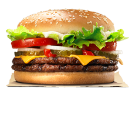

Uma Breve Historia do Hamburguer
Pouco se tem certeza sobre a origem do hambúrguer, mas existem registros datados do século XII e XIII, que mostram que os nômades lá na Europa já possuíam o hábito de moer carnes e amassadas para se alimentar. Segundo registros históricos, o hambúrguer como conhecemos hoje, foi criado por um garoto de 15 anos em 1885 chamado Charlie Seymour. O adolescente moldava a carne em formato circular para caber dentro dos pães e poder ser consumido mais rapidamente.